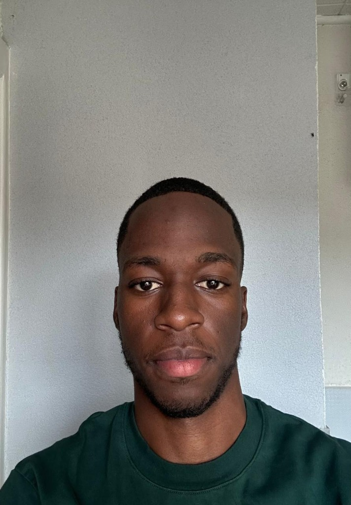

Représentant 01
Ariel Hidinua
Représentant des étudiants internationaux Parcours & EngagementÉtudiant angolais en BUT GEII à l’IUT de Saint-Dié, Ariel a obtenu une bourse d’excellence lui permettant de poursuivre ses études en France. Ancien président du pôle académique de l’association des élèves du lycée Eiffel d’Ondjiva et membre du pôle Génie de la Production Industrielle de l’ISPTEC, il possède une expérience en leadership étudiant. Il s’investit également dans l’entrepreneuriat social à travers Serenus, un projet dédié à la santé mentale bénéficiant d’un accompagnement dans l’écosystème de l’UNICEF.
Aujourd’hui, il souhaite mettre son expérience et son engagement au service de la communauté internationale de l’IUT.